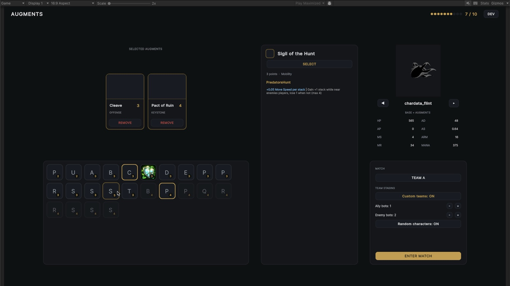

Unity · Personal project
Unity · Personal project
VSPX
I knew a MOBA was probably too big a project. I wanted to find out what it would take anyway—and learn how to build systems that could handle more than one character, ability, or idea.

The project
Making each piece useful more than once
VSPX started with a scope I knew was too big. That was part of the point: I wanted to see what a game like this asks of its systems, and how to keep a large codebase manageable as those systems grow.
Instead of solving every problem for one character, I try to make each piece useful across a roster: serialized data, shared combat rules, and ways to author abilities, items, and interactions.
Abilities & authoring
Building a kit from shared parts
A character is defined by data: stats, an archetype, and a set of abilities. Each ability describes things like how it targets, its range and cooldown, what happens on a hit, and whether it’s a projectile, dash, area effect, or something else.
Those pieces connect to shared systems for damage, healing, shields, status effects, and on-hit behavior. The interesting part is using the same vocabulary to make different kits—and then seeing how they interact when an entire roster is in play.
Items & economy
Decisions that build over a match
Items aren’t just a list of stat boosts. I’ve been working through components and upgrade recipes, item slots, costs, and how different character archetypes put a build together. Pre-game augments add another place to experiment with how a character plays.
Then there’s the economy around it: income, minions, camps, kills, and objectives all affect when a player can afford their next item. I’ve been tuning those rewards against match length and one another; the numbers and balance are still very much in progress.

Animation & effects
Putting OpenVAT to work
Almost all of the animation and VFX use vertex animation textures. It’s a useful place to put OpenVAT to work on both characters and effects while I figure out how the game should look and feel in motion.
These recordings are from different stages of development. They include models and other visuals borrowed from League of Legends as placeholders, including minions in later footage. Later work is mostly my own, but I don’t yet have footage that cleanly separates all of those assets.
Bot players
Making the other side think
Bot AI has been a project of its own. A bot needs to make sense of its character’s abilities and role, fight, farm, buy items, and respond to what’s happening around it. Getting those decisions to work together in a complex game has been a lot of the learning.
I’ve also experimented with accelerated match tests to look at behavior, balance, and pacing as the systems change.
Gameplay design
What if players built the map control?
One mode I’ve explored gets rid of fixed lanes and lets players place their own turrets. Those structures create places to recover, control space, and support minion waves; investing in them competes with spending on your own character.
The idea is to make positioning and small decisions matter while I work through the harder question: how do you keep a match moving without losing the back-and-forth that makes it fun?
From the workbench
A few more tests
Short clips from different stages of the project, from an early map to combat and balance tests. Gameplay footage includes borrowed placeholder assets.
Silent development recordings · Select a clip to play
Still in progress
A lot left to figure out
A networked MOBA is the long-term idea, but networking is still groundwork and local testing—not a finished multiplayer game. VSPX is a personal prototype, and the systems and balance are still changing as I learn what they need.